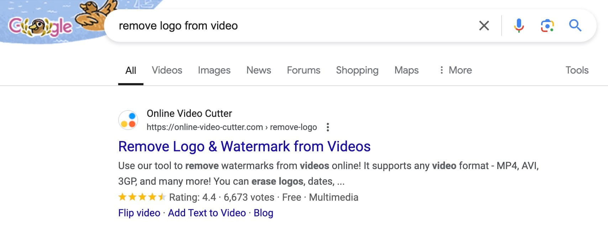
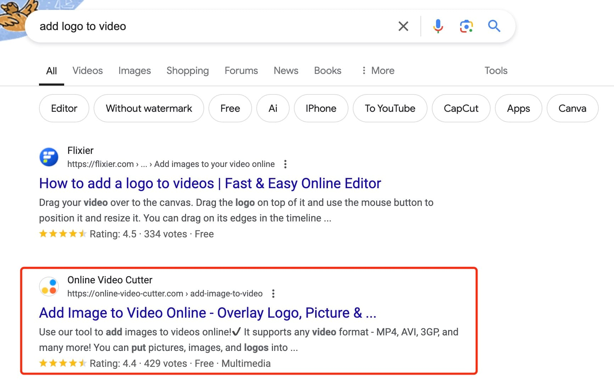
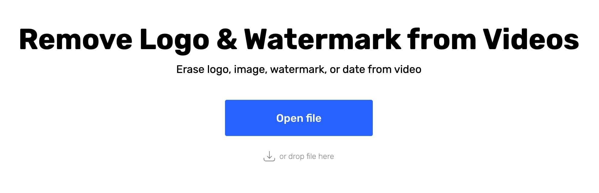
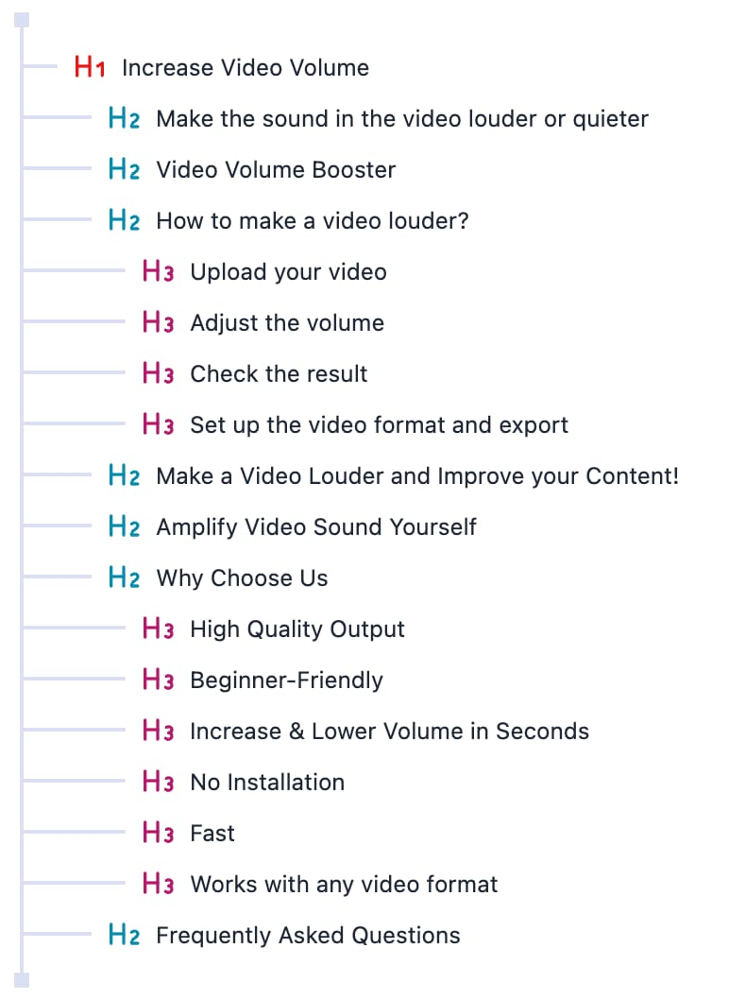

如何覆盖小词，如何布局页面结构
日期：2024-08-06
给大家看两个例子，这个网站是怎么覆盖小词的。他为每一个词都做了一个功能页面，打开就是落地页，也是功能页。


https://online-video-cutter.com/remove-logo

https://online-video-cutter.com/add-image-to-video
这个网站月访问量是 600 万，60%流量来自于自然搜索，也就是每个月有 360 万左右从搜索引擎免费获得的。
用 15 万个页面，覆盖了 2.6 万个关键词。各种各样的小词都覆盖到了，如“increase volume of video”，这是提高视频音量需求。
大家可以学习这个站的页面布局，为了拿到一个关键词的搜索量，每个页面都放了哪些内容。https://online-video-cutter.com/volume
最重要一点，大家会发现，拿流量的页面，跟美丑其实没多大关系，直接朴实无华的，放很多文字介绍也是可以的，只要简单排班一下即可。

学习这些页面结构，丰富我们自己网站内容。好酒也怕巷子深，放在 SEO 领域，就是好功能也怕你不写文字介绍。谷歌不怕你文字多，就怕你没文字。没文字，我怎么知道你的这个页面到底是关于什么内容的呢？
再一个，以后 AI 搜索引擎越来越多，他们怎么判断要不要推荐你的网页？还不是靠你的网页写的内容来判断。